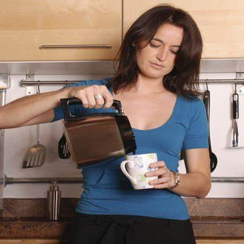
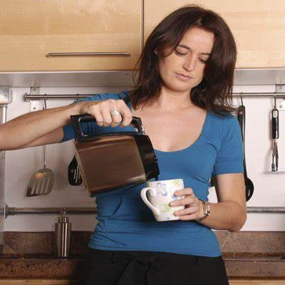

Coffee B, a excelência do
Melhor café da cidade.
A segunda bebida mais consumida no mundo é também aquela que hoje serve como instrumento para aproximar ainda mais as pessoas. A pergunta “vamos combinar um café qualquer dia desses?” poderia ser considerada universal quando o assunto é marcar encontro com pessoas queridas ou uma reunião qualquer.
Grâos Selecionados
Tradicionais
são constituídos por grãos de café tipo 8 COB ou melhores, com máximo de 20% em peso de grãos com defeitos pretos, verdes e ardidos, admitindo-se a utilização de grãos de safras passadas de cafés verde-claros com qualquer bebida. Recomenda-se evitar a presença de grãos pretos-verdes ou fermentados.
Superiores
são formados por grãos de café tipo 6 COB ou melhores, com máximo de 10% em peso de grãos com defeitos pretos, verdes e ardidos, admitindo-se a utilização de grãos de safras passadas de cafés verde-claros com qualquer bebida. Recomenda-se evitar a presença de grãos pretos-verdes ou fermentados.
Gourmet
são os constituídos por grãos de café arábica tipo 2 a tipo 4 COB, com ausência de grãos com defeitos pretos, verdes e ardidos, pretos-verdes e fermentados.
Café e Tranquilidade
Um momento de paz antes de começar o dia e ele se chama café da manhã!
Minha receita para começar bem o dia é tomar um café da manhã com as pessoas que eu amo.
O sabor da felicidade
Quem não gosta de café da manhã, não sabe o que está perdendo na vida!
 
